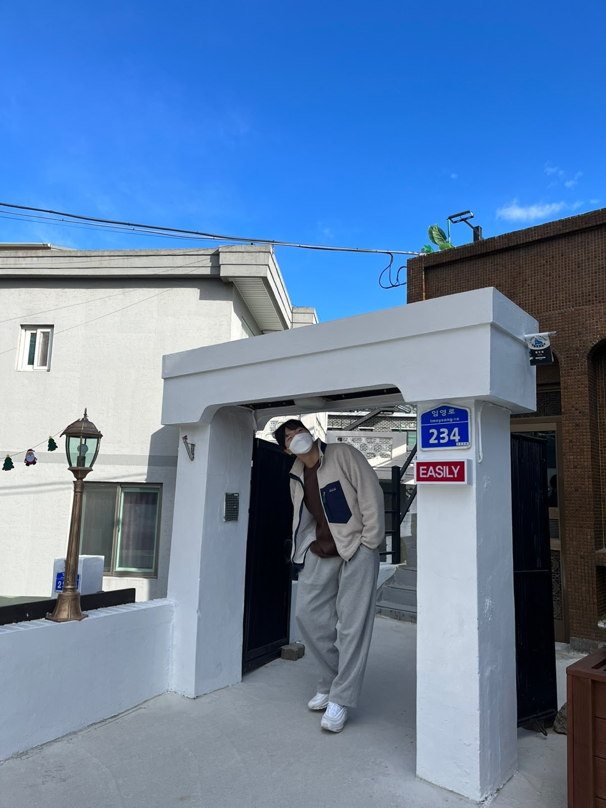

Home
About

No fail No gain
Just do it!
저는 NEXT 11기 경영학과 최성호입니다.
인구 문제에 대해서 관심이 많구
사람들이 기다리고 있을 서비스를 만들고자 합니다.
실행력이 가장 우선적이고, 빠르게 성장하고자 합니다.
올해 제 목표는 유저와 매출을 기록하는 것입니다.
이 목표를 함께할 분들 언제든지 연락주세요.
2023.03.09
I love the NEXT